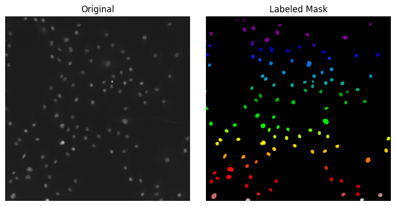
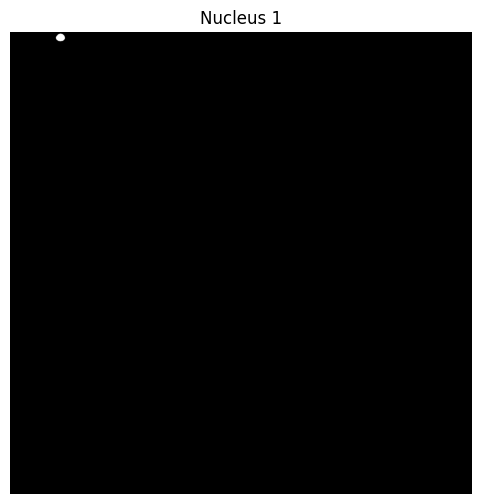
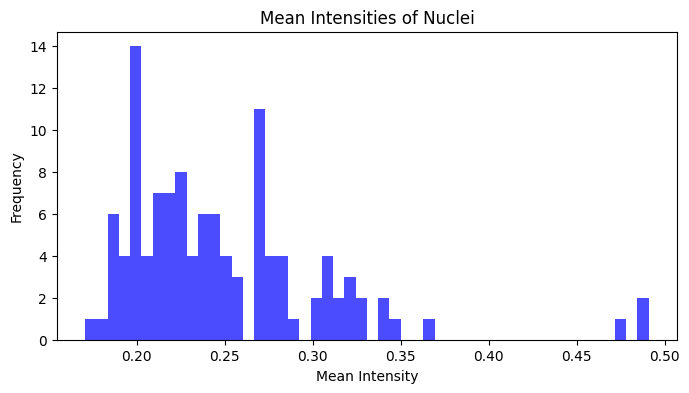
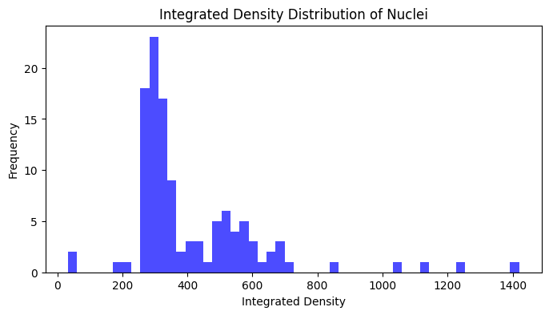
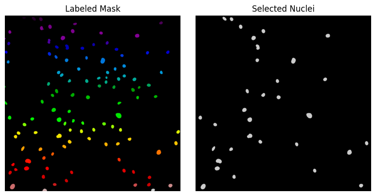

# /// script
# requires-python = ">=3.10"
# dependencies = [
# "matplotlib",
# "numpy",
# "scikit-image",
# "scipy",
# "tifffile",
# "imagecodecs",
# "pandas",
# ]
# ///
from pathlib import Path
import matplotlib.pyplot as plt
import numpy as np
import pandas as pd
import skimage
import tifffile
image = tifffile.imread("../../_static/images/quant/DAPI_wf_10.tif")
labeled_mask = tifffile.imread("../../_static/images/quant/DAPI_wf_10_labels.tif")
# Display results
fig, axis = plt.subplots(1, 2, figsize=(8, 4))
axis[0].imshow(image, cmap="gray")
axis[0].set_title("Original")
axis[0].axis("off")
axis[1].imshow(labeled_mask, cmap="nipy_spectral")
axis[1].set_title("Labeled Mask")
axis[1].axis("off")
plt.tight_layout()
plt.show()

# create an image that contains only the pixels of the first nucleus in the labeled image
nucleus_1 = labeled_mask == 1
# Plot the extracted nucleus image
plt.figure(figsize=(6, 6))
plt.imshow(nucleus_1, cmap="gray")
plt.title("Nucleus 1")
plt.axis("off")
plt.show()

print(np.min(nucleus_1))
print(np.max(nucleus_1))
False
True
# Extract the intensity values of the pixels that belong to this nucleus from the original image
nucleus_1_intensity = image[nucleus_1]
# Print the intensity values
print(nucleus_1_intensity)
[0.14724375 0.16933577 0.20225072 ... 0.14086601 0.09265734 0.16034997]
nucleus_1_mean_intensity = np.mean(nucleus_1_intensity)
print(f"Mean intensity of nucleus 1: {nucleus_1_mean_intensity}")
Mean intensity of nucleus 1: 0.2542710304260254
nucleus_1_area = np.sum(nucleus_1)
print(f"Area of nucleus 1: {nucleus_1_area}")
Area of nucleus 1: 1312
pixel_size = 0.325 # µm
nucleus_1_area_um2 = nucleus_1_area * (pixel_size**2)
print(f"Area of nucleus 1: {nucleus_1_area_um2} um^2")
Area of nucleus 1: 138.58 um^2
props = skimage.measure.regionprops(labeled_mask, image)
props[0]
<RegionProperties: label=1, bbox=(8, 229, 46, 274)>
props[0].mean_intensity
/tmp/ipykernel_3450/2318543170.py:1: FutureWarning: `RegionProperties.mean_intensity` is deprecated starting in version 0.26 and will be removed in version 2.0. Use `RegionProperties.intensity_mean` instead.
props[0].mean_intensity
np.float32(0.25427103)
# Extract mean intensity of all regions
mean_intensities = []
for prop in props:
mean_intensities.append(prop.mean_intensity)
# NOTE: this for loop can also be written as a list comprehension:
# mean_intensities = [prop.mean_intensity for prop in props]
# plot the mean intensities in a histogram
plt.figure(figsize=(8, 4))
plt.hist(mean_intensities, bins=50, color="blue", alpha=0.7)
plt.title("Mean Intensities of Nuclei")
plt.xlabel("Mean Intensity")
plt.ylabel("Frequency")
plt.show()
/tmp/ipykernel_3450/1647744942.py:4: FutureWarning: `RegionProperties.mean_intensity` is deprecated starting in version 0.26 and will be removed in version 2.0. Use `RegionProperties.intensity_mean` instead.
mean_intensities.append(prop.mean_intensity)

np.sum(props[0].image_intensity)
np.float32(333.60358)
raw_image_path = Path("/Users/raw_images_folder")
labels_image_path = Path("/Users/labels_images_folder")
labels_image_suffix = "_labeled.tif" # How does the labeled image file name end?
# Create a list to store the integrated density values for all nuclei in the dataset
integrated_density_list = []
for raw_image_file in raw_image_path.glob("*.tif"):
# Load the raw image
raw_image = tifffile.imread(raw_image_file)
# Get image name without extension
image_name = raw_image_file.stem
# Load the corresponding labeled image
labels_image_file = labels_image_path / f"{image_name}_{labels_image_suffix}"
if not labels_image_file.exists():
print(f"Labels file for {image_name} not found. Skipping...")
continue
labeled_mask = tifffile.imread(labels_image_file)
# Get region properties
props = skimage.measure.regionprops(labeled_mask, intensity_image=raw_image)
# Calculate total integrated density for each nucleus
for prop in props:
integrated_density = np.sum(prop.image_intensity)
integrated_density_list.append(integrated_density)
# same as:
# integrated_density_list.extend([np.sum(prop.image_intensity) for prop in props])
# Plot the distribution of integrated density values
plt.figure(figsize=(8, 4))
plt.hist(integrated_density_list, bins=250, color="blue", alpha=0.7)
plt.title("Integrated Density Distribution of Nuclei")
plt.xlabel("Integrated Density")
plt.ylabel("Frequency")
plt.show()
# raw image and labeled mask
image = tifffile.imread("../../_static/images/quant/DAPI_wf_10.tif")
labeled_mask = tifffile.imread("../../_static/images/quant/DAPI_wf_10_labels.tif")
props_dict = skimage.measure.regionprops_table(
labeled_mask, intensity_image=image, properties=["label", "image_intensity", "area"]
)
print(props_dict.keys())
dict_keys(['label', 'image_intensity', 'area'])
integrated_density_list = props_dict["image_intensity"]
# let's print the first three values since the list can be long
print(integrated_density_list[:3])
[array([[-0., 0., 0., ..., 0., 0., 0.],
[ 0., 0., 0., ..., 0., 0., 0.],
[ 0., 0., 0., ..., 0., 0., 0.],
...,
[ 0., 0., 0., ..., 0., 0., 0.],
[ 0., 0., 0., ..., 0., 0., 0.],
[ 0., 0., 0., ..., 0., 0., 0.]], shape=(38, 45), dtype=float32)
array([[ 0., 0., 0., ..., 0., 0., 0.],
[ 0., 0., 0., ..., 0., -0., 0.],
[ 0., 0., 0., ..., 0., 0., 0.],
...,
[ 0., 0., 0., ..., 0., 0., 0.],
[ 0., 0., 0., ..., 0., 0., 0.],
[ 0., 0., 0., ..., 0., 0., 0.]], shape=(51, 52), dtype=float32)
array([[ 0., 0., 0., ..., 0., 0., -0.],
[ 0., 0., 0., ..., 0., 0., 0.],
[ 0., 0., 0., ..., 0., 0., 0.],
...,
[ 0., 0., 0., ..., 0., 0., 0.],
[ 0., 0., 0., ..., 0., 0., 0.],
[ 0., 0., 0., ..., 0., -0., 0.]], shape=(50, 46), dtype=float32)]
props_df = pd.DataFrame(props_dict)
print(props_df)
label image_intensity area
0 1 [[-0.0, 0.0, 0.0, 0.0, 0.0, -0.0, 0.0, 0.0, 0.... 1312.0
1 2 [[0.0, 0.0, 0.0, 0.0, 0.0, 0.0, 0.0, 0.0, 0.0,... 1748.0
2 3 [[0.0, 0.0, 0.0, 0.0, 0.0, 0.0, 0.0, 0.0, 0.0,... 1729.0
3 4 [[0.0, 0.0, 0.0, 0.0, 0.0, 0.0, 0.0, 0.0, 0.0,... 1351.0
4 5 [[0.0, 0.0, 0.0, 0.0, 0.0, 0.0, 0.0, 0.0, 0.0,... 1185.0
.. ... ... ...
110 111 [[0.0, 0.0, 0.0, 0.0, 0.0, 0.0, 0.0, 0.0, 0.0,... 1622.0
111 112 [[0.0, 0.0, 0.0, 0.0, 0.0, 0.0, 0.0, 0.0, 0.0,... 3556.0
112 113 [[0.0, 0.0, 0.0, -0.0, 0.0, 0.0, 0.0, 0.0, 0.0... 1971.0
113 114 [[0.0, 0.0, 0.0, 0.0, 0.0, 0.0, 0.0, 0.0, 0.0,... 1488.0
114 115 [[0.0, 0.0, 0.0, 0.0, 0.0, 0.0, 0.0, 0.0, 0.0,... 1339.0
[115 rows x 3 columns]
image_intensity = props_df["image_intensity"]
print(image_intensity)
0 [[-0.0, 0.0, 0.0, 0.0, 0.0, -0.0, 0.0, 0.0, 0....
1 [[0.0, 0.0, 0.0, 0.0, 0.0, 0.0, 0.0, 0.0, 0.0,...
2 [[0.0, 0.0, 0.0, 0.0, 0.0, 0.0, 0.0, 0.0, 0.0,...
3 [[0.0, 0.0, 0.0, 0.0, 0.0, 0.0, 0.0, 0.0, 0.0,...
4 [[0.0, 0.0, 0.0, 0.0, 0.0, 0.0, 0.0, 0.0, 0.0,...
...
110 [[0.0, 0.0, 0.0, 0.0, 0.0, 0.0, 0.0, 0.0, 0.0,...
111 [[0.0, 0.0, 0.0, 0.0, 0.0, 0.0, 0.0, 0.0, 0.0,...
112 [[0.0, 0.0, 0.0, -0.0, 0.0, 0.0, 0.0, 0.0, 0.0...
113 [[0.0, 0.0, 0.0, 0.0, 0.0, 0.0, 0.0, 0.0, 0.0,...
114 [[0.0, 0.0, 0.0, 0.0, 0.0, 0.0, 0.0, 0.0, 0.0,...
Name: image_intensity, Length: 115, dtype: object
integrated_density_0 = np.sum(image_intensity[0])
print(integrated_density_0)
333.60358
# Calculate integrated density for each nucleus
integrated_densities = []
for intensity_array in props_df["image_intensity"]:
integrated_density = np.sum(intensity_array)
integrated_densities.append(integrated_density)
# same as:
# integrated_densities = [np.sum(intensity_array) for intensity_array in props_df['image_intensity']]
# Plot histogram of integrated densities
plt.figure(figsize=(8, 4))
plt.hist(integrated_densities, bins=50, color="blue", alpha=0.7)
plt.title("Integrated Density Distribution of Nuclei")
plt.xlabel("Integrated Density")
plt.ylabel("Frequency")
plt.show()

# Add integrated density as a new column
props_df["integrated_density"] = integrated_densities
# Print the first few rows of the DataFrame to verify the new column
props_df.head()
| label | image_intensity | area | integrated_density | |
|---|---|---|---|---|
| 0 | 1 | [[-0.0, 0.0, 0.0, 0.0, 0.0, -0.0, 0.0, 0.0, 0.... | 1312.0 | 333.603577 |
| 1 | 2 | [[0.0, 0.0, 0.0, 0.0, 0.0, 0.0, 0.0, 0.0, 0.0,... | 1748.0 | 479.227600 |
| 2 | 3 | [[0.0, 0.0, 0.0, 0.0, 0.0, 0.0, 0.0, 0.0, 0.0,... | 1729.0 | 493.648102 |
| 3 | 4 | [[0.0, 0.0, 0.0, 0.0, 0.0, 0.0, 0.0, 0.0, 0.0,... | 1351.0 | 278.010895 |
| 4 | 5 | [[0.0, 0.0, 0.0, 0.0, 0.0, 0.0, 0.0, 0.0, 0.0,... | 1185.0 | 283.689819 |
mean_area = props_df["area"].mean()
mean_density = props_df["integrated_density"].mean()
# conditional filtering
large_bright_nuclei = props_df.loc[
(props_df["area"] > mean_area) & (props_df["integrated_density"] > mean_density)
]
print(
f"% of nuclei larger than average and brighter than average: {len(large_bright_nuclei) / len(props_df) * 100}%"
)
% of nuclei larger than average and brighter than average: 27.82608695652174%
selected_labels = large_bright_nuclei["label"].values
selected_mask = np.isin(labeled_mask, selected_labels)
fig, axis = plt.subplots(1, 2, figsize=(8, 4))
axis[0].imshow(labeled_mask, cmap="nipy_spectral")
axis[0].set_title("Labeled Mask")
axis[0].axis("off")
axis[1].imshow(selected_mask, cmap="nipy_spectral")
axis[1].set_title("Selected Nuclei")
axis[1].axis("off")
plt.tight_layout()
plt.show()

props_df.iloc[:10].head()
| label | image_intensity | area | integrated_density | |
|---|---|---|---|---|
| 0 | 1 | [[-0.0, 0.0, 0.0, 0.0, 0.0, -0.0, 0.0, 0.0, 0.... | 1312.0 | 333.603577 |
| 1 | 2 | [[0.0, 0.0, 0.0, 0.0, 0.0, 0.0, 0.0, 0.0, 0.0,... | 1748.0 | 479.227600 |
| 2 | 3 | [[0.0, 0.0, 0.0, 0.0, 0.0, 0.0, 0.0, 0.0, 0.0,... | 1729.0 | 493.648102 |
| 3 | 4 | [[0.0, 0.0, 0.0, 0.0, 0.0, 0.0, 0.0, 0.0, 0.0,... | 1351.0 | 278.010895 |
| 4 | 5 | [[0.0, 0.0, 0.0, 0.0, 0.0, 0.0, 0.0, 0.0, 0.0,... | 1185.0 | 283.689819 |
props_df.iloc[:10, :3].head()
| label | image_intensity | area | |
|---|---|---|---|
| 0 | 1 | [[-0.0, 0.0, 0.0, 0.0, 0.0, -0.0, 0.0, 0.0, 0.... | 1312.0 |
| 1 | 2 | [[0.0, 0.0, 0.0, 0.0, 0.0, 0.0, 0.0, 0.0, 0.0,... | 1748.0 |
| 2 | 3 | [[0.0, 0.0, 0.0, 0.0, 0.0, 0.0, 0.0, 0.0, 0.0,... | 1729.0 |
| 3 | 4 | [[0.0, 0.0, 0.0, 0.0, 0.0, 0.0, 0.0, 0.0, 0.0,... | 1351.0 |
| 4 | 5 | [[0.0, 0.0, 0.0, 0.0, 0.0, 0.0, 0.0, 0.0, 0.0,... | 1185.0 |
props_df.to_csv("nucleus_measurements.csv", index=False)
props_df_loaded = pd.read_csv("nucleus_measurements.csv")
# check the data
props_df_loaded.head()